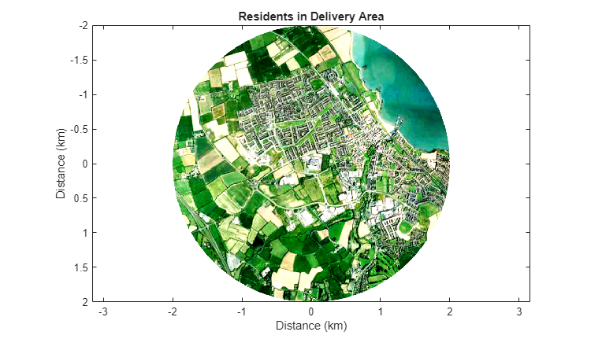
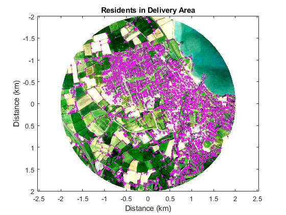
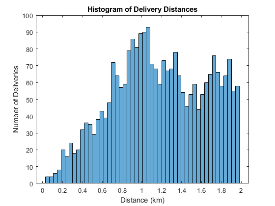
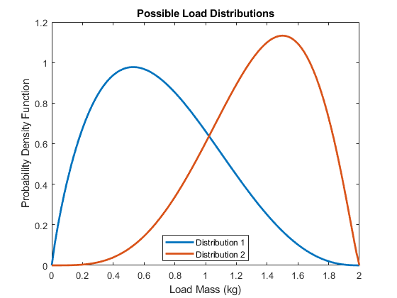
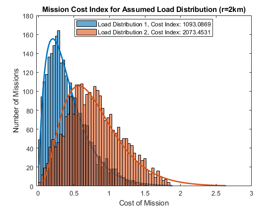

Quadcopter Delivery Zone Cost Analysis
This example shows how to use image processing and statistical analysis to analyze the relative costs incurred when flying delivery drone missions.
- Image processing is used to identify areas of dense population.
- MATLAB code is used to generate a histogram of mission distances
- Statistics are used to create a parameterized distribution of load mass
- Fitting tools are used to estimate the cost index
Contents
Import Image
An image of the delivery area is imported into MATLAB for processing.
[img, ~, ImageAlpha] = imread('Dublin_DroneArea_Image.png'); % Plot results if ~exist('h0_quadcopter_delivery_zone', 'var') || ... ~isgraphics(h0_quadcopter_delivery_zone, 'figure') h0_quadcopter_delivery_zone = figure('Name', 'quadcopter_delivery_zone'); end figure(h0_quadcopter_delivery_zone) clf(h0_quadcopter_delivery_zone) temp_colororder = get(gca,'defaultAxesColorOrder'); data_diameter = 4; image([-1 1]*data_diameter/2,[-1 1]*data_diameter/2,... img,'AlphaData',ImageAlpha) axis equal box on title('Residents in Delivery Area') xlabel('Distance (km)') ylabel('Distance (km)')
Identify Populated Areas with Image Processing
Corner detection is used to identify populated areas.
% Extract green data img_Gr = img(:,:,2); % Identify corners corners = detectHarrisFeatures(img_Gr,'FilterSize',5); % Center and rescale data px = corners.Location(:,1); d_px = max(px)-min(px); px_sc = (px-d_px/2)/d_px*data_diameter; py = corners.Location(:,2); d_py = max(py)-min(py); py_sc = (py-d_py/2)/d_py*4; % Calculate distance from center to points rad_set = (px_sc.^2+py_sc.^2).^0.5; % Eliminate points on outer edge radEdgeInds = find(rad_set<1.98); rad_setNew = rad_set(radEdgeInds,:); rad_set = []; rad_set = rad_setNew; if ~exist('h1_quadcopter_delivery_zone', 'var') || ... ~isgraphics(h1_quadcopter_delivery_zone, 'figure') h1_quadcopter_delivery_zone = figure('Name', 'quadcopter_delivery_zone'); end figure(h1_quadcopter_delivery_zone) clf(h1_quadcopter_delivery_zone) temp_colororder = get(gca,'defaultAxesColorOrder'); image([-1 1]*data_diameter/2,[-1 1]*data_diameter/2,... img,'AlphaData',ImageAlpha) axis equal box on hold on plot(px_sc(radEdgeInds),py_sc(radEdgeInds),'m.'); hold off title('Residents in Delivery Area') xlabel('Distance (km)') ylabel('Distance (km)')
Histogram of Delivery Distances
Distance from the delivery center is calculated in MATLAB, and a histogram is created to show the distribution of distances.
if ~exist('h2_quadcopter_delivery_zone', 'var') || ... ~isgraphics(h2_quadcopter_delivery_zone, 'figure') h2_quadcopter_delivery_zone = figure('Name', 'quadcopter_delivery_zone'); end figure(h2_quadcopter_delivery_zone) clf(h2_quadcopter_delivery_zone) temp_colororder = get(gca,'defaultAxesColorOrder'); histogram(rad_set,50) title('Histogram of Delivery Distances') xlabel('Distance (km)'); ylabel('Number of Deliveries')
Statistical Distribution of Load Masses
To explore effect on costs, a statistical distribution of costs is generated. This parameterized distribution can be adjusted using two parameters.
% Beta distributions are 0-1, so we scale by maximum weight max_weight = 2; % kg x = [0:0.01:1]; beta_coeff_1 = [1.9 3.5]; beta_coeff_2 = [4.6 2.2]; Y1 = betapdf(x,beta_coeff_1(1),beta_coeff_1(2))/max_weight; % Example 1 Y2 = betapdf(x,beta_coeff_2(1),beta_coeff_2(2))/max_weight; % Example 2 x = x*max_weight; if ~exist('h4_quadcopter_delivery_zone', 'var') || ... ~isgraphics(h4_quadcopter_delivery_zone, 'figure') h4_quadcopter_delivery_zone = figure('Name', 'quadcopter_delivery_zone'); end figure(h4_quadcopter_delivery_zone) clf(h4_quadcopter_delivery_zone) temp_colororder = get(gca,'defaultAxesColorOrder'); plot(x,Y1,'DisplayName','Distribution 1','LineWidth',2); hold on plot(x,Y2,'DisplayName','Distribution 2','LineWidth',2); hold off title('Possible Load Distributions'); xlabel('Load Mass (kg)') ylabel('Probability Density Function') legend('Location','Best')
Histogram of Delivery Costs
Combining the statistical distributions of mission distances and load masses, we estimate a cost index for the missions flown.
% Generate random set of loads according to distributions rng('default'); % For repeatability set random seed to default load_set_1 = betarnd(beta_coeff_1(1),beta_coeff_1(2),length(rad_set),1); load_set_2 = betarnd(beta_coeff_2(1),beta_coeff_2(2),length(rad_set),1); % Calculate cost proxy: weight*distance wd1 = load_set_1.*rad_set; wd2 = load_set_2.*rad_set; if ~exist('h3_quadcopter_delivery_zone', 'var') || ... ~isgraphics(h3_quadcopter_delivery_zone, 'figure') h3_quadcopter_delivery_zone = figure('Name', 'quadcopter_delivery_zone'); end figure(h3_quadcopter_delivery_zone) clf(h3_quadcopter_delivery_zone) h1=histfit(wd1,50,'gamma'); h1(1).FaceAlpha = 0.6; h1(1).DisplayName = ['Load Distribution 1, Cost Index: ' num2str(sum(wd1))]; h1(2).Color = temp_colororder(1,:); h1(2).DisplayName = ''; h1(2).HandleVisibility = 'off'; hold on h2=histfit(wd2,50,'gamma'); h2(1).FaceColor = temp_colororder(2,:); h2(1).DisplayName = ['Load Distribution 2, Cost Index: ' num2str(sum(wd2))]; h2(1).FaceAlpha = 0.6; h2(2).Color = temp_colororder(2,:); h2(2).DisplayName = ''; h2(2).HandleVisibility = 'off'; %pd1 = fitdist(wd1,'gamma'); %pd2 = fitdist(wd2,'gamma'); title('Mission Cost Index for Assumed Load Distribution (r=2km)') xlabel('Cost of Mission') ylabel('Number of Missions') legend('Location','Best')
%clear all close all %bdclose all